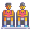

New Headcoach
Erik ten Hag was confirmed as Manchester United manager in April 2022, replacing Ralf Rangnick after the at the conclusion of the 2021/22 Premier League season.
He would then go on to be appointed as manager of Go Ahead Eagles in 2012, leading the team to their first promotion in 17 years during his only season at the club.A move to Bayern Munich's reserve team took place in June 2013 and two years later, he was appointed sporting director and head coach of Utrecht, where he won the manager of the year award in 2016.
News
more

Players
moreMatches
more